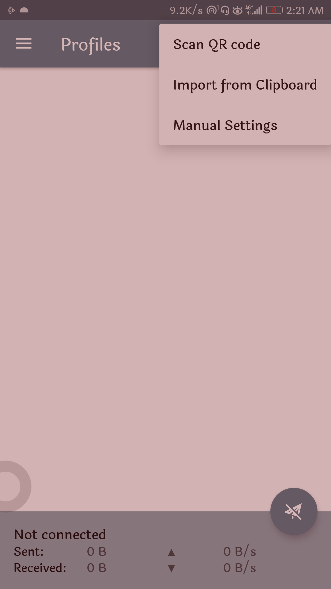
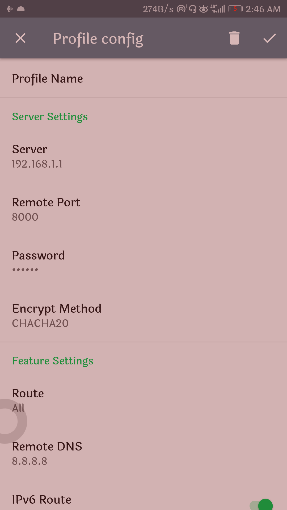
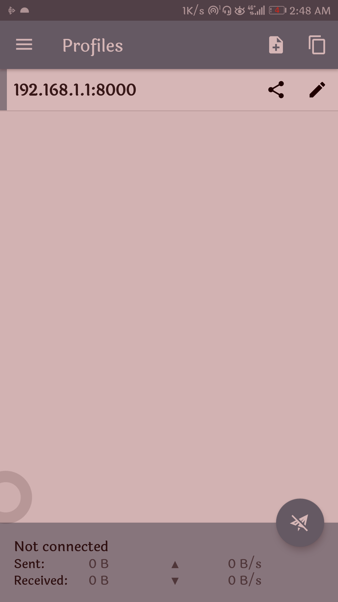
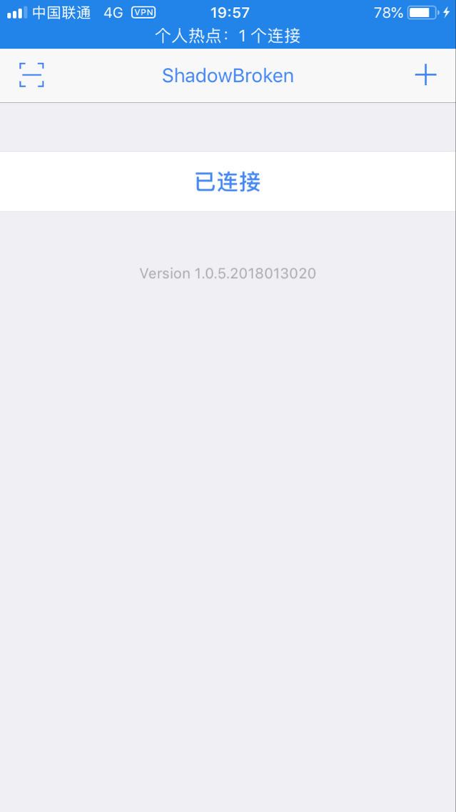
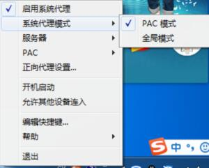
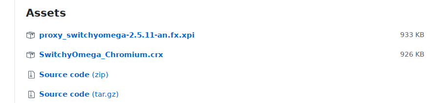
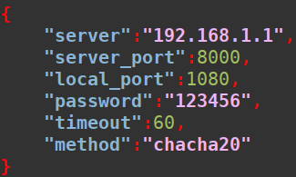

Bypass Guide
Table of Contents
If you don't understand anything in the process of reading or operating, or if a link fails, please email me.
You can reach any corner of the world across the firewall. Have fun. :)
ATTENTION(Legal Notices)
Once you begin to browse this document, you will comply with the following statement I made. If you not, please stop reading, thanks.
- The technology that anyone learns from this document CAN ONLY be used for study, work, scientific research, and entertainment purposes.
- It MUST NOT violate Chinese laws, and MUST NOT intentionally disseminate information outside of GFW to the mainland of China. It MUST NOT publish excessive remarks. Any violation of the law is HIS OWN responsibility and HAS NOTHING to do with me.
- For possible reasons, the techniques described in this document may not achieve the desired results. The author does not guarantee any of them. Even the authors are not responsible for solving the problems caused by these operations. However, based on past experience, what is said here is workable and will not bring any problems.
- Any individual or group that violates this statement HAS NOTHING to do with me.
Overview
See bottom for Email address of author. This article is completely a rookie for computers and mobile phones. As long as you patiently follow the documentation down you can always visit Google.
Due to some reasons, it is not possible to access and use well-known websites and applications such as Google and Facebook in mainland China. This article does not intend to discuss these reasons. My purpose is to enable people to use these services to facilitate their work, study, life, and entertainment. Everything else has nothing to do with me. Any problems that come with it are the responsibility of the individual.
For the sake of simplicity, I only discuss how to do it and achieve the desired effect, not to talk about why. The structure discussed in this article is based on various systems and hardware platforms. The main hardware platforms include mobile phones and computers. There are Android and iOS operating systems in the mobile platform. The computer platform is divided into three systems: Linux, Windows, and Mac. So next I will follow these classifications to discuss how to achieve the access to Google and other sites on these platforms.
It is getting harder and harder now to bypass. Now the common practice is to send your access request to a server first, instead of sending it directly to a Google server. The intermediate server will visit Google for you and return the result. Well, first of all, you have to have your own intermediate server. Usually this intermediate server is available in two ways. The first is to build your own server, and how to build your own server is a tricky problem. Anyone who reads this document can ask the author how to do this(see bottom). The other is to buy a server that has already been built by others. Here I recommend a company that provides this kind of service: https://www.fyzhuji.com. And if you decide to buy services provided by the company, I suggest you join the author's self-built server instead of buying the company provided, so you not only save the trouble of creating a server, but also avoid spending more to obtain the freedom of information that you should get. If you think so, please contact the author. In short, I will assume in this article that you already have a hypothetical server with the following parameters(of course it doesn't work, you have to have its own available server).
- Server Name: 192.168.1.1
- Remote Port: 8000
- Password: 123456
- Encrypt Method: chacha20
Install and Configuration
Mobile Phone
Mobile phones are mainly divided into Android and iOS systems.
Android
- Install
First we need to install the Android client. Obviously, these clients are hardly available in mainland China. In my github I provided the software for download: APK for Android. This is open source software, so you shouldn’t worry about security issues such as back doors.
- Configuration
Shadowsocks software runs after the installation is complete. It is probably as shown in the initial run.

Figure 1: Picture of Shadowsocks initial run
Then click the + symbol in the top right corner. After clicking it looks like this:

Figure 2: Picture of after click + symbol
Then click "Manual Settings" in the top right corner. There are three ways to import the server. Other methods can be tried after you are familiar with this software. After clicking it looks like this:

Figure 3: Picture of after click "Manual Setting"
Of course, these parameters are not what we assumed here. So we must modify it according to the server parameters assumed here. Parameters not mentioned in the screenshot do not need to be modified. The figure after modifying the parameters is as follows.

Figure 4: Picture of after modified parameters
Then click the small tick in the upper right corner to complete the parameter configuration. Return to the main interface after completion.

Figure 5: Picture of completion of config
Then click on the server entry 192.168.1.1. Makes it has a green bar on the left to achieve the purpose of selecting this server. Like the figure:

Figure 6: Picture of running a server
Of course, now you can't see the delay. That's because this server is our hypothetical one. It doesn't work. If it is a normal working server you should see something like this:

Figure 7: Picture of running a server in that a working server
If you see a delay like above picture, it means that you have crossed the firewall and now you can reach anywhere in the world. You can now visit https://www.google.com. Have fun. :)
iOS
- Install
Due to iOS software management, it is not easy for iOS devices to bypass. For some reason, the APP store of iOS is always off-platform for the client that used for bypassing. The "shadowrocket", which was previously available in the APP stores China area, has now been removed. As of the completion of this tutorial, the alternative that can be downloaded and used in China is "shadowbroken". Search and download "shadowbroken" in the APP store. After downloading and running as shown:

Figure 8: Initial running of "shadowbroken"
- Configure
Configuration is similar to Andorid client. Click the "+" button in the picture above. As picture shows:

Figure 9: After click "+" button
Configure it according to the server parameters assumed here. Similar to the Android client.
The most critical difficulty in bypassing of the iOS device is the acquisition of the client. According to my estimation, it will not be long before "shadowbroken" will be removed. If that happens, you can try the following solution.
- Try searching for software that starts with "shadow" in the Chinese region. Perhaps the ios client has another name on the line.
- Try switching your APP store area to a non-China area. What is more difficult to solve in the switching process is the debit bank card. Students generally do not have a debit bank card. At this time, we must go to the universal Taobao for searching visa card. Or try signing up for a paypal account.
- Last but not least, for a real Android phone, such as a Google phone.
Thanks to Jabberwocky's help, he provided screenshots of the iOS device to me. :)
Computer
The main computer system is divided into Linux, Windows and Mac OS. Then I installed the bypass software on these three systems.
Windows
- Install
The Windows installation package is in the form of zip. Check here for download, like below picture:

Figure 10: Download for Windows install package
Click on Shadowsocks-X.X.XX.zip to download and unzip and run. During the initial run, you may encounter problems with the version of the .Net framework being too low. At this time, the Windows system will prompt you to upgrade, you only need to follow the prompt to upgrade. The interface after starting the running is shown below.

Figure 11: Initial running interface
- Configure
Then configure according to the hypothetical server mentioned above. Pay attention to first click on the "添加" before configuration at lower left corner. Last click "确定".

Figure 12: Complete the configuration
After completion, there will be a small aircraft symbol in the lower right corner of the screen. Click it and configure it as shown in the figure below.

Figure 13: Enable proxy in PAC mode
You can now visit https://www.google.com.
Linux(Debain)
- Install
First need to install "shadowsocks-libev":
~$ sudo aptitude update ~$ sudo aptitude install shadowsocks-libev
You also need to install a Chrome plugin from here. Download "SwitchyOmega Chromium.crx" as picture shows:

Figure 14: SwitchyOmega Chromium.crx
Install this downloaded plugin into Chrome.
- Configure
~$ sudo nano /etc/shadowsocks-libev/example.json
Save "example.json" as shown:

Figure 15: json configuration
SwitchyOmega need to be configure as shown:

Figure 16: SwitchOmega configuration
Remember to click Apply changes on the left side of the page after completing the configuration.
The last step is to run the agent:
~$ ss-local -c /etc/shadowsocks-libev/example.json -v
Of course, the SwitchOmega plug-in must be in the enable state. Now you can visit google.com.